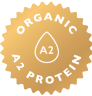
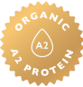

LOẠI 2
Sữa công thức 6-12 tháng
Sữa bò hữu cơ Úc + Protein A2
Sức mạnh gấp 2, đơn giản theo
cách thiên nhiên dành cho trẻ từ 6-12 tháng
Loại 2
Sữa công thức theo dõi cùng trẻ 6-12 tháng
985.000 VNĐ
900g
Tự hào được sản xuất tại Úc, Công thức tiếp theo Protein A2 hữu cơ Giai đoạn 2 của chúng tôi cung cấp cho trẻ sơ sinh dinh dưỡng cần thiết cho sự tăng trưởng và phát triển bình thường. Chúng tôi trộn sữa bò protein A2 hữu cơ với prebiotic, men vi sinh, vitamin và khoáng chất để tạo ra một công thức giàu dinh dưỡng và tốt hơn cho bụng nhỏ.
Sự kết hợp độc đáo giữa sữa bò hữu cơ được chứng nhận của Úc + protein casein A2 beta
Bụng nhỏ hơn
Prebiotic nâng cao (FOS) và Probiotic (LC40)
DHA & ARA
Vitamin thiết yếu A, B, C, D, E và Khoáng chất Sắt và Iốt
Cân bằng dinh dưỡng để hỗ trợ sự tăng trưởng và phát triển bình thường của trẻ sơ sinh
Không chứa dầu cọ, không chứa đậu nành
Ngăn đựng thìa riêng biệt được đóng kín vệ sinh

.png)
.png) 

Công thức từ sữa tươi mang đến những cách sáng tạo để tận dụng sữa tươi ngon và biến nó thành những món ăn ngon miệng. Từ món tráng miệng ngọt ngào cho đến các món ăn sáng bổ dưỡng, sữa tươi là nguyên liệu đa năng và dinh dưỡng giàu dinh dưỡng. Trong bài viết này, chúng tôi sẽ khám phá những công thức từ sữa thơm độc và hấp dẫn mà bạn có thể thực hiện tại nhà.

Chứa đạm quý A2
Chứng nhận hữu cơ NASAA
Không có thành phần GMO
Không thuốc thực vật tổng hợp
Không có hương vị nhân tạo
Không có màu nhân tạo
Không chất bảo quản
Không chứa dầu cọ
Không chứa dầu đậu nành
Không thuốc thực vật tổng hợp
Không có màu nhân tạo

Công thức từ sữa tươi - chứa đạm quý A2
Ocean Road Dairies là sản phẩm đầu tiên được sản xuất từ sữa tươi của những chú bò Úc chứa đạm A2 thuần chủng, được nuôi 100% hữu cơ tại trang trại tại Ocean Road, thuộc Vitory, Úc.Sản lượng sữa hữu cơ A2 ở Úc và nước ngoài rất khan hiếm.Các trang trại của chúng tôi cung cấp sữa hữu cơ cao cấp và hữu cơ A2 an toàn.Sữa cao cấp hữu cơ A2 của chúng tôi được lấy từ những con bò chỉ sản sinh ra A2 Beta loại Protein Casein (và không có A1).Sữa bột dành cho trẻ sơ sinh của chúng tôi được làm từ “sữa tươi Úc”.
Sản phẩm LIÊN QUAN

Loại 1
Sữa cho trẻ sơ sinh 0-6 ThángOcean Road Dairies sản phẩm sữa công thức hữu cơ chứa đạm quý A2 được làm từ sữa bò Úc tươi.
Liên hệ ngay
Loại 3
Sữa cho trẻ tập đi 1 nămOcean Road Dairies sản phẩm sữa công thức hữu cơ chứa đạm quý A2 được làm từ sữa bò Úc tươi.
Liên hệ ngayNhận xét và Cảm nhận của ba mẹ
Những lời đánh giá chân thật từ khách hàng đã sử dụng Ocean Road là niềm tin đối với đội ngũ chúng tôi tiếp tục xây dựng niềm tin và nỗ lực vươn lên cao xa hơn.

Không có gì tuyệt vời hơn khi biết rằng con trẻ của mình đang uống sữa Ocean Road Dairies. Chất lượng và dinh dưỡng của sản phẩm này thực sự xuất sắc. Chúng tôi cảm thấy tự tin rằng con trẻ của chúng tôi đang nhận được những dưỡng chất tốt nhất từ sữa hữu cơ này
Mẹ Thùy Minh
Nội trợ
Không có gì tuyệt vời hơn khi biết rằng con trẻ của mình đang uống sữa Ocean Road Dairies. Chất lượng và dinh dưỡng của sản phẩm này thực sự xuất sắc. Chúng tôi cảm thấy tự tin rằng con trẻ của chúng tôi đang nhận được những dưỡng chất tốt nhất từ sữa hữu cơ này
Mẹ Thùy Minh
Nội trợ
Không có gì tuyệt vời hơn khi biết rằng con trẻ của mình đang uống sữa Ocean Road Dairies. Chất lượng và dinh dưỡng của sản phẩm này thực sự xuất sắc. Chúng tôi cảm thấy tự tin rằng con trẻ của chúng tôi đang nhận được những dưỡng chất tốt nhất từ sữa hữu cơ này
Mẹ Thùy Minh
Nội trợ
Không có gì tuyệt vời hơn khi biết rằng con trẻ của mình đang uống sữa Ocean Road Dairies. Chất lượng và dinh dưỡng của sản phẩm này thực sự xuất sắc. Chúng tôi cảm thấy tự tin rằng con trẻ của chúng tôi đang nhận được những dưỡng chất tốt nhất từ sữa hữu cơ này
Mẹ Thùy Minh
Nội trợ
Không có gì tuyệt vời hơn khi biết rằng con trẻ của mình đang uống sữa Ocean Road Dairies. Chất lượng và dinh dưỡng của sản phẩm này thực sự xuất sắc. Chúng tôi cảm thấy tự tin rằng con trẻ của chúng tôi đang nhận được những dưỡng chất tốt nhất từ sữa hữu cơ này
Mẹ Thùy Minh
Nội trợ
Không có gì tuyệt vời hơn khi biết rằng con trẻ của mình đang uống sữa Ocean Road Dairies. Chất lượng và dinh dưỡng của sản phẩm này thực sự xuất sắc. Chúng tôi cảm thấy tự tin rằng con trẻ của chúng tôi đang nhận được những dưỡng chất tốt nhất từ sữa hữu cơ này
Mẹ Thùy Minh
Nội trợ
Không có gì tuyệt vời hơn khi biết rằng con trẻ của mình đang uống sữa Ocean Road Dairies. Chất lượng và dinh dưỡng của sản phẩm này thực sự xuất sắc. Chúng tôi cảm thấy tự tin rằng con trẻ của chúng tôi đang nhận được những dưỡng chất tốt nhất từ sữa hữu cơ này
Mẹ Thùy Minh
Nội trợ
Không có gì tuyệt vời hơn khi biết rằng con trẻ của mình đang uống sữa Ocean Road Dairies. Chất lượng và dinh dưỡng của sản phẩm này thực sự xuất sắc. Chúng tôi cảm thấy tự tin rằng con trẻ của chúng tôi đang nhận được những dưỡng chất tốt nhất từ sữa hữu cơ này
Mẹ Thùy Minh
Nội trợ
Không có gì tuyệt vời hơn khi biết rằng con trẻ của mình đang uống sữa Ocean Road Dairies. Chất lượng và dinh dưỡng của sản phẩm này thực sự xuất sắc. Chúng tôi cảm thấy tự tin rằng con trẻ của chúng tôi đang nhận được những dưỡng chất tốt nhất từ sữa hữu cơ này
Mẹ Thùy Minh
Nội trợĐĂNG KÝ NHẬN THÔNG TIN TƯ VẤN